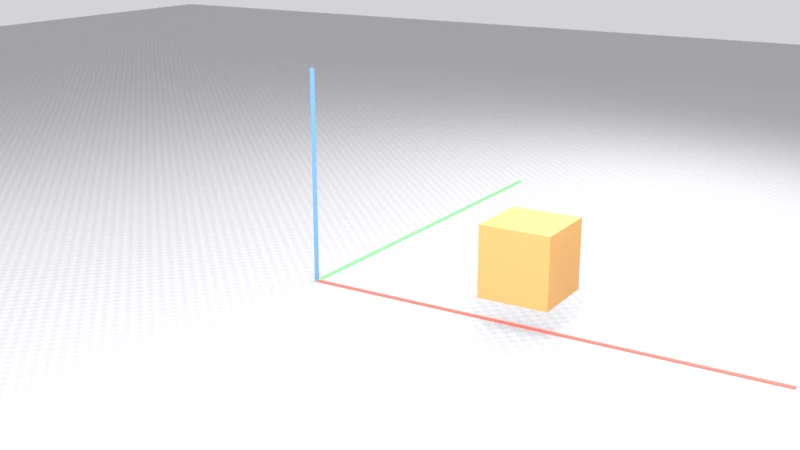
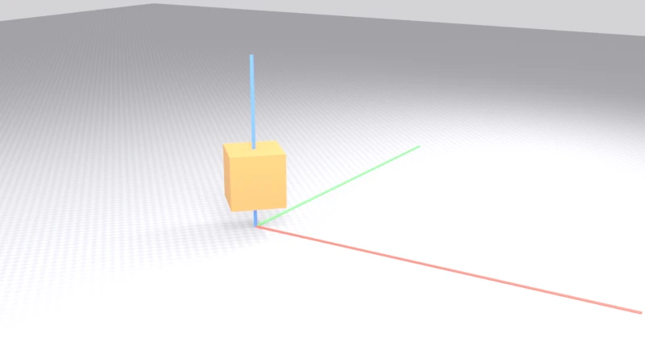
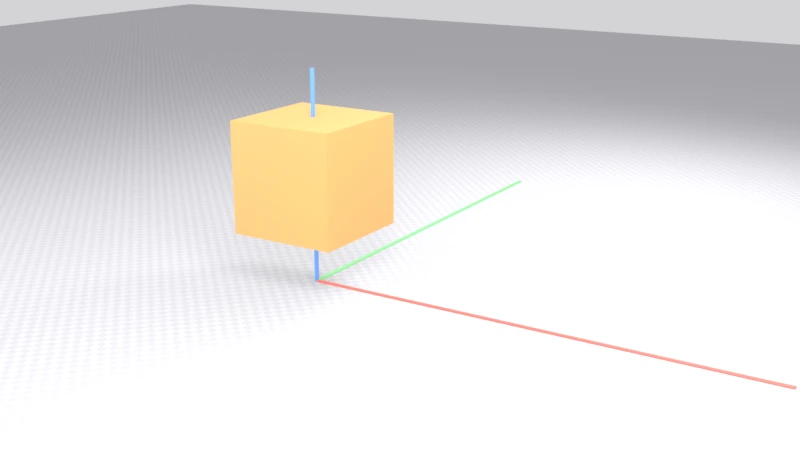
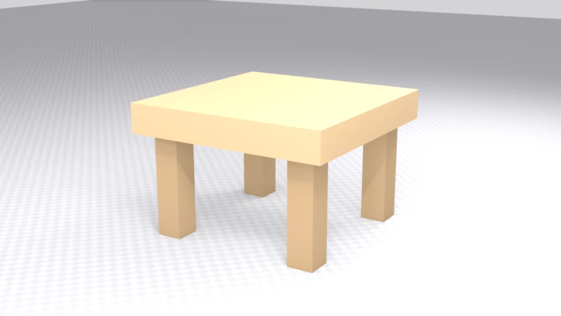
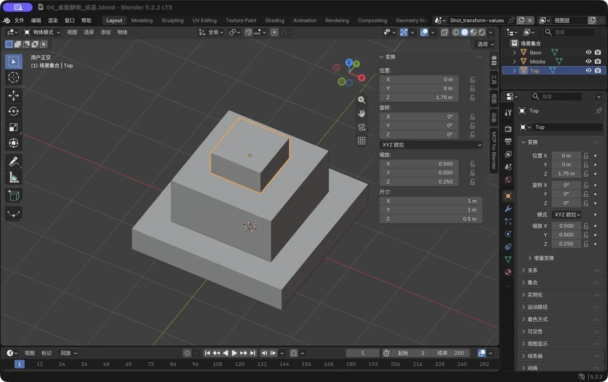

第 2 章 必会操作：你的第一个小时
场景：这一小时不学建模，只练"驾驶技术"。学完它，你能让任何物体在 3D 空间里精确地到你想要的位置——这是后面所有章节的地基。
学完你会
这一章练的是手上功夫。练完之后，移动 G、旋转 R、缩放 S 会变成你下意识的动作；你还会学会用轴向约束和数值输入，把操作精确到小数点——"往左挪一点点"这种模糊指令，从此变成"沿 X 轴移动 1.5 米"；最后再掌握选择系统的组合拳，能快速选中你想选的东西。
核心概念：变换（Transform）与坐标轴
在 3D 世界里，挪动物体只有三种方式，统称变换：
| 变换 | 快捷键 | 生活比喻 |
|---|---|---|
| 移动（Move/Grab） | G |
把桌子搬到别处 |
| 旋转（Rotate） | R |
把桌子转个方向 |
| 缩放（Scale） | S |
把桌子改大改小 |
每种变换都发生在坐标系里，所以你首先要认识场景里那个"三色轴"：红色横着的是 X 轴（左右方向），绿色纵着的是 Y 轴（前后方向），蓝色竖着的是 Z 轴（上下方向——Blender 里朝上的轴是 Z，这一点和某些软件不同，先记牢）。以后说"沿 X 轴移动"，就是沿着红色那根轴走直线。
图 12 场景里的三色轴：红 X、绿 Y、蓝 Z。下面四个图请对照看
跟着做 1：G / R / S 三连
打开 Blender（如果上一个场景还在，按 Ctrl+N 新建一个干净的）。
① 移动（Grab）
左键选中立方体，按 G——然后只移动鼠标，别点击：立方体会跟着鼠标在场景里跑。这就是"抓起来搬走"的手感。看准位置后左键点击 = 确认；如果想反悔，右键或 Esc = 取消，方块会自己回到原位。这两个"后悔键"从今天起每次变换都通用，先练熟：按 G、乱拖、Esc，再按 G、放好、左键确认。

图 13 按 G 后移动鼠标，立方体沿鼠标方向移动（图中向右移动到 X 轴正方向）
② 轴向约束——本课重点
刚才的移动是"跟着鼠标随便跑"，不够精确。想沿单轴移动，诀窍是：按 G 之后、点击确认之前，再按一下轴键——G 后按 X，物体就乖乖只沿红轴动，横向怎么摆鼠标都不理你；按 Y、按 Z 同理。再按一次同一个轴键，约束反转成"排除该轴"；按 Shift+X 则是在 YZ 平面上自由滑动。这个"先按工具、再按轴"的顺序，是之后每天的肌肉记忆。
③ 数值输入——精确操作
更狠的一招是直接打数字：
G X 1.5 Enter → 沿 X 轴精确移动 1.5 米
R Z 45 Enter → 绕 Z 轴精确旋转 45 度
S 2 Enter → 整体放大到 2 倍
现在练一下：把立方体沿 X 轴移动 1.5 米，看看它落到哪儿，再 Ctrl+Z 撤销回原位。
④ 旋转（R）
选中立方体按 R，同样先别点击——移动鼠标，它在转了；Esc 取消。然后试精确版：R、Z、输入 45、Enter——绕竖直轴准准地转 45 度。

图 14 绕 Z 轴旋转 45 度（俯视时能看到明显转动）
⑤ 缩放（S）
手感一样：按 S 移动鼠标，物体变大变小；要"只在一个方向拉长"，用 S X 1.5 Enter——像拉面条一样把它拉成长条。

图 15 整体放大 1.6 倍后的样子
跟着做 2：选择系统的组合拳
变换的前提是"选中"。除了左键点选，这几种选择方式也要顺手学会：
| 操作 | 效果 |
|---|---|
| 左键点击 | 选中一个物体 |
Shift+左键 |
加选 / 减选（在已选中上再点一次 = 取消） |
A |
全选（再按一次 = 取消全选） |
Alt+A |
全部取消选择 |
B 后框选 |
拉一个矩形框，框内的都被选中 |
动手走一遍：Shift+A（添加菜单）→ 网格 → 球体，加一个球；A 全选，看立方体和球一起亮起；Alt+A 全部取消，再单独左键点中球；按 X（删除菜单）→ 删除——球没了，别慌，Ctrl+Z 能把它救回来。这套"选中—操作—后悔"的循环，就是你之后每天的工作节拍。
💡 新物体总是出生在 3D 游标处——那个红白小圆圈所在的位置。如果新加的物体总是不在原点：Shift+C 把游标归零并全览视角，或者 Shift+右键 点地面把游标放过去，再加物体。这是新手最常问的"我的新物体去哪了"。
跟着做 3：综合小练习——搭一张"小凳子"
到了检验手感的时候。用刚学的技术搭一张小凳子，不用追求好看，把动作做顺就好：先 Shift+A 加一个立方体，S 0.8 Enter 缩小些，再 G Z 0.5 Enter 把它抬到半空——这就是"凳面"；然后 Shift+A 再加一个立方体，S 0.15 Enter 缩成小柱子，G 把它挪到凳面一角的下方，G Z 调好高度顶住凳面；最后再做三条腿——不用重搭，选中现成的那条腿 Shift+D 复制，G 挪到位置即可。
Shift+D 就是复制物体：副本会粘着鼠标，G 或直接点击决定放哪。以后你想"再要一个一样的"，全靠它。

图 16 小凳子练习示意：凳面 + 四条腿——G / R / S、复制和数值输入全用上了，这就够了
进阶一点：变换的数值面板
每次操作做完，左下角会弹出一个小面板（错过了按 F9），里面记着这次操作的参数：移动了多少、旋转了几度。这就是 Blender 最体贴的设计之一——先粗略做，再精确改：拖歪了不用重来，在面板里把数字改对就行。
另外，按 N 打开的**侧栏（Sidebar）**是另一张操作台：选中物体的位置、旋转、缩放数值都列在这里，可以直接改。需要"把坐标输入成 0.35 这种"的时候，就找它。
进阶一点：世界轴、局部轴与"尺寸 ≠ 缩放"
世界轴 vs 局部轴。 变换时连按两下同一个轴键（比如 G X X），约束就从"世界的 X"切换成"物体自己的 X"。当物体已经被旋转过，让它按"自己的方向"移动会顺手得多——视口顶部会显示当前用的是全局还是局部。
尺寸 ≠ 缩放。 按 N 打开侧栏看看："尺寸"是物体实际多大，"缩放"是相对原始网格的倍率。被 S 随意缩过的物体，缩放值不是 1——平时没感觉，但后面加修改器（尤其倒角和厚度）时容易出怪结果。
所以养成一个收尾习惯：Ctrl+A → 缩放。 对用 S 改过大小的物体，选中它执行一次：外观一点不变，缩放值变回 (1, 1, 1)，等于把这次缩放"焊"进网格。建模告一段落、准备加修改器之前，顺手做一遍就对了。

图 17 真实软件截图：N 面板里缩放是 (0.5, 0.5, 0.25)——这是倍率，不是实际尺寸
图 18 Ctrl+A → 缩放之后：外观没变，缩放值全变回了 (1, 1, 1)
新手常见坑
| 坑 | 说明 | 对策 |
|---|---|---|
| 按 G 之后物体跟着鼠标乱飞 | 正常！此时还没确认 | 左键确认 / 右键或 Esc 取消，别慌着乱点 |
| 移动完了才想改数值 | 已确认的操作可以救 | 左下角面板（或 F9）改参数 |
| 新加的物体总是歪的/偏的 | 3D 游标不在原点 | Shift+C 归零游标后再添加 |
Shift+D 复制的和在原地分不开 |
副本和原件完全重叠 | 复制后立刻 G 移开 |
| 缩放后导出别的软件比例不对 | 缩放值没有“应用” | 见上一节：Ctrl+A → 缩放，一步解决 |
键盘没小键盘、1/2/3 没反应 |
或者是你正在中文输入法下 | 切英文输入法；没有小键盘就勾选“模拟小键盘” |
过关标准
- 我能用
G/R/S+ 锁轴 + 数值输入，把物体精确摆到指定位置（比如GZ0.5）； - 我看得懂左下角的操作参数面板，会用它回头精调刚做完的操作；
- 我知道“尺寸”和“缩放”的区别，并对缩放过的物体做过一次
Ctrl+A→ 缩放。
自检题
- 把物体沿 X 轴精确移动 2 米，写出完整按键序列。
G之后按了Z，物体还能在水平面移动吗？为什么？- 复制物体的快捷键是什么？和选中物体的快捷键有什么区别？
- 新添加的物体不在原点，最可能的原因和最短修复方法？
答案见文末。
自检题答案
- 选中物体 →
G→X→2→Enter（X 对应红色轴；若按了Z就是竖直方向了）。 - 不能。按
Z后移动被锁定在 Z 轴（竖直方向）；再按一次Z反而会排除 Z 轴变成水平移动，Shift+Z也是排除。 Shift+D复制；A全选——注意别记混，一个是 Duplicate 一个是 All。- 3D 游标不在原点；按
Shift+C把游标归零。
小结
这一章的三件套值得反复练：G 移、R 转、S 缩，左键确认、右键或 Esc 取消；按完工具再按轴键就能锁住单轴，Shift+轴 则是排除该轴；嫌鼠标不够准，直接打数字——"指哪打哪"。
选择和复制也别生疏：左键点选、Shift 加减、A 全选、Alt+A 清空、B 框选；Shift+D 复制，Ctrl+Z 后悔，F9 回头改参数。最后记住两个地基级的概念：新物体的出生点由 3D 游标决定（迷糊了就 Shift+C）；以及"尺寸 ≠ 缩放"——用 S 改过大小的物体，记得 Ctrl+A 收个尾。
下一章，我们换到编辑模式，用这些手上的功夫，去捏第一件真正的作品。